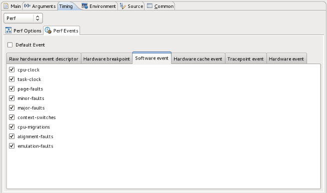

Linux Tools - Perf Support
Overview
The Linux Tools Perf plugin aims to bring the accurate and efficient profiling capabilities of Perf to Eclipse C/C++ Development Tools, providing an easy to use interface for inexperienced users while still maintaning a high degree of customizability for experienced users. Where the Perf plugin excels is in its rich visualization of the profiling data provided by the Perf tool, allowing users to quickly determine the parts of their code which use the most time.
Current Status
- Launch a local C/C++ application and Perf simultaneously to start profiling (No root password required)
- Automatically gather Perf data and display in a tree viewer after a launch
- Configure Perf to profile several events simultaneously
- Remote project profiling using RSE or RemoteTools
- Jump to the line-number of the corresponding source file on a double-click of a sample
- One-click launch with reasonable defaults
- Available as the default timing profiling tool under Linux Tools unified profiling interface
Future Plans
- Comparing two perf data files similar to functionality of perf --diff
- Make Perf available as the default timing profiling tool under CDTs unified profiling interface.
Screenshots
Perf View

Perf Events Configuration Tab
{kind=link}
Try it out
You can download the plugin from our update site, or check the project plugins out of Git directly from eclipse.org at git://git.eclipse.org/gitroot/linuxtools/org.eclipse.linuxtools.git. You will need all the plugins under the profiling subfolder:org.eclipse.linuxtools.perf org.eclipse.linuxtools.perf.doc org.eclipse.linuxtools.perf-feature org.eclipse.linuxtools.perf.remote-feature org.eclipse.linuxtools.perf.tests org.eclipse.linuxtools.profiling-feature org.eclipse.linuxtools.profiling.launch org.eclipse.linuxtools.profiling.test-feature org.eclipse.linuxtools.profiling.tests org.eclipse.linuxtools.profiling.uiFor help with installing and using the plugin, please read the user guide here.